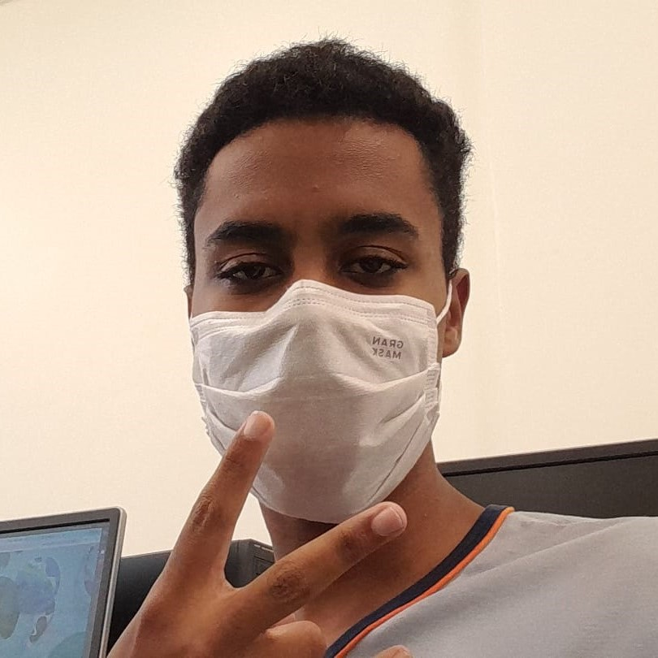

- HP
- 20/35

Nome:
Eloy RibeiroClasse:
LadinoNivel:
16
- Prof
- +3
- XP
- 5.480
- For
- 9
- 0
- Des
- 12
- +2
- Car
- 12
- +2
- Sab
- 11
- +1
- Int
- 13
- +3
- Con
- 10
- +1
Tendencia:
Neutro
Traços de Personalidade:
Sinto quase uma necessidade de estar aprendendo, mesmo que isso me quase grande estresse.
Escuto cada lado, e seus argumentos, antes de tomar uma decisão final, e detesto opinar sobre assuntos que não compreendo ou de pesssoas que insistem no que não sabem.
Sou horrível em apresentações, situações sociais e tambem não sou fã de grandes aglomerações
Apesar de me considerar introvertido preciso tomar cuidado com para não falar de mais quando o tema da conversa é um assunto que eu gosto e/ou tenho intimidade com as pessoas.
Ideais:
Emoções não devem nublar seu pensamento lógico.
Me dedico a estudar e aprender tanto sobre mim como sobre os mais diversos assuntos.
O objetivo de uma vida de estudos é a melhoria de si mesmo.
Habilidades e Proficiências
Estou aprendendo a andar de skate.
Acho sei desenhar um pouco, mas faz muito tempo que desenho.
Sei (e estou aprendendo) Front-end e o básico da lingagem C.
Minha história
Nasci no primeiro de julho de 2006. Tive uma infancia padrão, estudei a vida inteira em escola publica. Em 2021 comecei a jogar RPG com um amigo e tomei gosto, atualmente minha rotina dificulta um pouco mas assim que tiver um tempo vou voltar a jogar. Outras informações sobre mim é que gosto muito de filmes, livros, desenhos, animes e o que estiver relacionada com a cultura pop, ou melhor dizendo, cultura nerd.